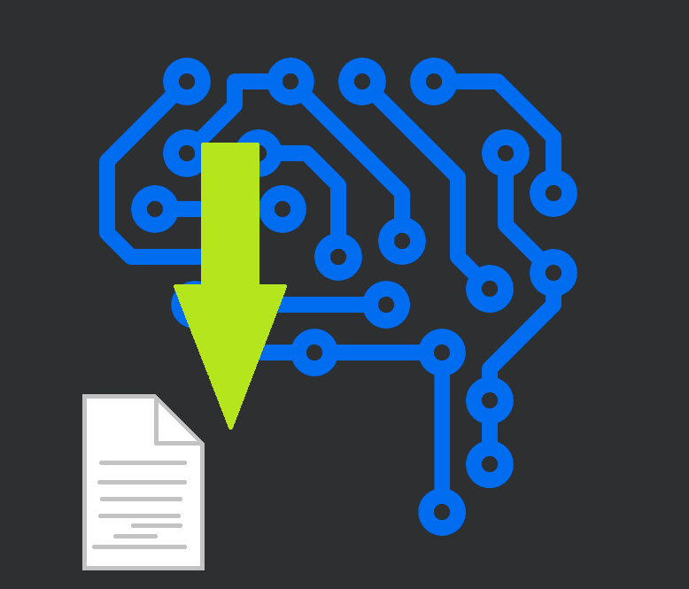
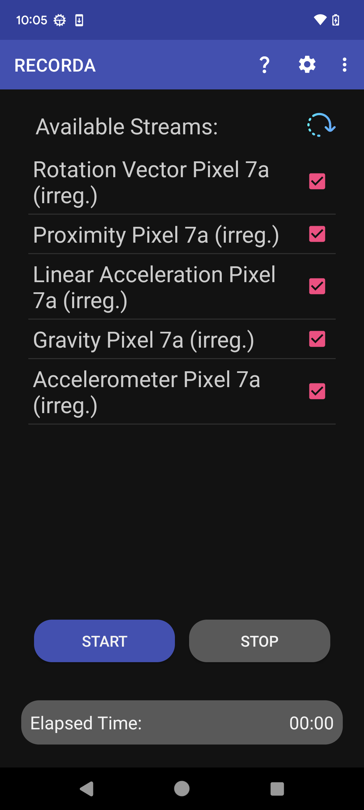
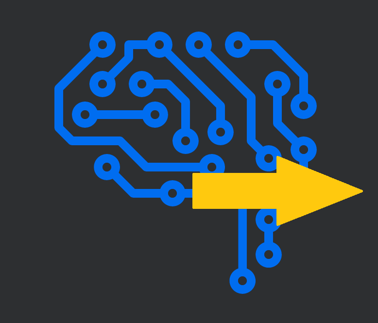
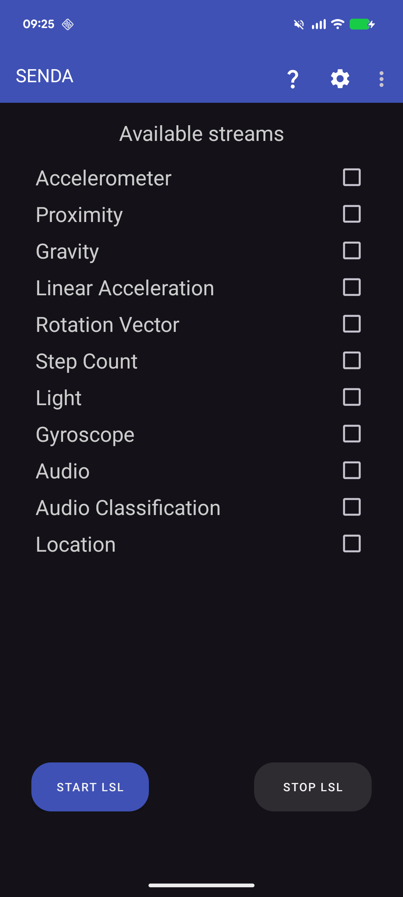
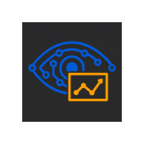
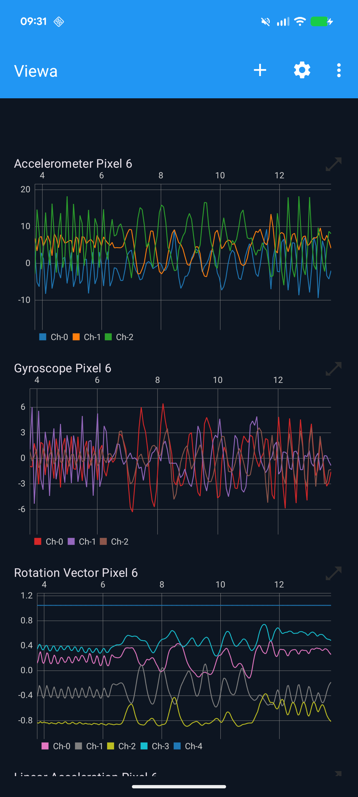

Neuropsychology Lab · University of Oldenburg
Mobile Neuroscience
on Android
Free, open-source Android apps for recording and streaming biosignals with the Lab Streaming Layer (LSL) — no laptop required.


Free, open-source Android apps for recording and streaming biosignals with the Lab Streaming Layer (LSL) — no laptop required.
Three companion apps — use them together or individually.

LabRecorder for Android
Discovers all LSL streams on the local Wi-Fi network and records them directly on your Android phone or tablet into the standard XDF file format — synchronized, timestamped, and ready for MATLAB, Python, or EEGLAB.


Sensor Data streamer via LSL
Streams all built-in smartphone sensors — accelerometer, gyroscope, magnetometer, light, proximity, step counter, and more — as LSL streams on the local network, ready to be recorded.


Stream Visualization App
Visualizes continuous streams and event markers during experiments for live inspection.

A complete, self-contained data acquisition pipeline on a single phone, or across multiple devices on the same Wi-Fi network.
All streams share a common LSL clock — synchronized timestamps, no post-hoc alignment needed.
XDF files can be opened with
pyxdf,
MNE-Python,
EEGLAB, or
Fieldtrip.
Up and running in minutes — no compilation required.
Enable Install from unknown sources in Android settings, then open the APK files. Android 8.0 (API 26) or higher required.
Put all devices on the same local Wi-Fi network. LSL uses multicast — it does not work across separate network segments.
Launch SENDA and/or your EEG device. Open RECORDA, tap Refresh, select your streams, and tap Start.
Please cite the relevant paper if you use these apps in your research.
Published with RECORDA, SENDA, or VIEWA?
Let us know — we'll add it here.